文件系统目录结构 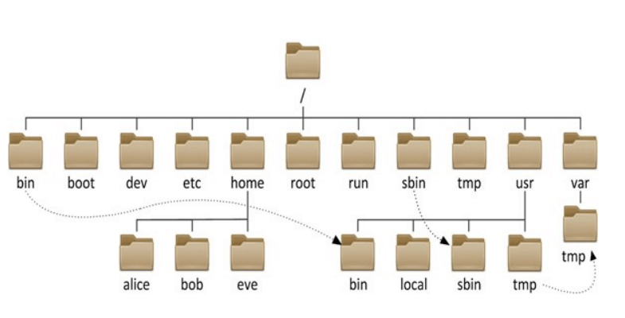
FHS文件系统
FHS（Filesystem Hierarchy Standard：文件系统层次化标准），是由Linux基金会维护的，帮助发行版 厂商和开发者们使用共同的标准来约定其发行的Linux系统或开发的软件遵守共同的文件和目录标准。
FHS是多数Linux版本采用的文件组织形式，采用树形结构组织文件。FHS定义了系统中每个区域的用 途、所需要的最小构成的文件和目录，同时还给出了例外处理与矛盾处理。
官方网站：https://www.pathname.com/fhs/
文件系统的目录结构
文件和目录被组织成一个单根倒置树结构
文件系统从根目录下开始，用“/”表示
根文件系统(rootfs)：root filesystem
标准Linux文件系统（如：ext4），文件名称大小写敏感，例如：MAIL, Mail, mail, mAiL
以 . 开头的文件为隐藏文件
路径分隔的 /
文件名最长255个字节
包括路径在内文件名称最长4095个字节
蓝色–>目录 绿色–>可执行文件 红色–>压缩文件 浅蓝色–>链接文件 灰色–>其他文件
除了斜杠和NUL，所有字符都有效。但使用特殊字符的目录名和文件不推荐使用，有些字符需要用引号来引用
每个文件都有两类相关数据：元数据：metadata，即属性， 数据：data，即文件内容
常见的文件系统目录功能 1 2 3 4 5 6 7 8 9 10 11 12 13 14 15 16 17 18 19 20 21 22 23 24 25 26 27 28 29 30 31 32 33 34 /boot /bin /sbin /lib /lib64 /etc /home/USERNAME /root /media /mnt /dev /opt /srv /tmp /usr /usr/bin /usr/sbin /usr/lib /usr/lib64 /usr/include /usr/share /var /var/cache /var/lib /var/local /var/lock /var/log /var/opt /var/run /var/spool /var/tmp /proc /sys /selinux
应用程序的组成部分 不同类型文件常用的目录
文件类型
常用目录
二进制文件
/bin,/sbin,/usr/bin,/usr/sbin,/usr/local/bin
库文件
/lib,/lib64,/usr/lib64,/usr/local/lib,/usr/local/lib64
配置文件
/etc,/etc/DIRECTORY,/usr/local/etc
帮助文件
/usr/share/man,/usr/share/doc,/usr/local/share/man
新版本目录结构变化
/bin 和 /usr/bin
/sbin 和 /usr/sbin
/lib 和/usr/lib
/lib64 和 /usr/lib64
范例：
1 2 3 4 5 6 7 8 9 10 11 12 13 14 15 16 17 18 19 20 21 22 23 24 25 [root@centos8 ~] lrwxrwxrwx. 1 root root 7 May 11 2019 /bin -> usr/bin lrwxrwxrwx. 1 root root 7 May 11 2019 /lib -> usr/lib lrwxrwxrwx. 1 root root 9 May 11 2019 /lib64 -> usr/lib64 lrwxrwxrwx. 1 root root 8 May 11 2019 /sbin -> usr/sbin [root@centos6 ~] dr-xr-xr-x. 2 root root 4096 Mar 20 09:14 /bin dr-xr-xr-x. 11 root root 4096 Dec 12 2018 /lib dr-xr-xr-x. 9 root root 12288 Mar 20 09:13 /lib64 dr-xr-xr-x. 2 root root 12288 Mar 20 09:14 /sbin [root@ubuntu2004 ~] lrwxrwxrwx 1 root root 7 Aug 24 2021 /bin -> usr/bin lrwxrwxrwx 1 root root 7 Aug 24 2021 /lib -> usr/lib lrwxrwxrwx 1 root root 9 Aug 24 2021 /lib64 -> usr/lib64 lrwxrwxrwx 1 root root 8 Aug 24 2021 /sbin -> usr/sbin [root@ubuntu1804 ~] drwxr-xr-x 2 root root 4096 Jan 12 18:41 /bin/ drwxr-xr-x 2 root root 24576 Jan 12 18:42 /usr/bin/
Linux下的文件类型 linux 系统中的文件类型标识符
文件类型
标识符
说明
普通文件
-
目录文件
d
directory
符号链接文件
l
link
块设备文件
b
block
字符设备文件
c
character
管道文件
p
pipe
套接字文件
s
socket
范例：
1 2 3 4 5 6 7 8 9 10 11 12 13 14 [root@centos7 ~] total 52 drwxr-xr-x 2 root root 100 Dec 9 20:41 abrt -rw------- 1 root root 11 Dec 9 20:41 alsactl.pid -rw-r--r-- 1 root root 5 Dec 9 20:41 atd.pid -rw-r--r-- 1 root root 4 Dec 9 20:41 auditd.pid prw------- 1 root root 0 Dec 9 20:41 autofs.fifo-misc prw------- 1 root root 0 Dec 9 20:41 autofs.fifo-net drwxr-xr-x 2 avahi avahi 80 Dec 9 20:41 avahi-daemon drwxr-xr-x 2 root root 40 Dec 9 20:41 certmonger drwxr-x--- 2 chrony chrony 80 Dec 9 20:41 chrony drwxr-xr-x 2 root root 40 Dec 9 20:41 console -rw-r--r-- 1 root root 5 Dec 9 20:41 crond.pid ---------- 1 root root 0 Dec 9 20:41 cron.reboot
linux 系统中的文件类型颜色标识
linux 系统中，每种颜色，都有对应的含义，可以根据文件在终端中显示的颜色，来判断是什么类型的文件
颜色与文件类型对应关系，由配置文件定义，可更改（此处的文件类型，可以理解为文件格式）
文件类型（格式）
颜色
普通文件
白色
目录文件
蓝色
符号链接文件
浅蓝色
块设备文件
黄色
字符设备文件
黄色
管道文件
青黄色
套接字文件
粉红色
图片文件
粉红色
压缩文件或文件包
红色
其他文件
灰色
管道文件
所谓管道，是指用于连接一个读进程和一个写进程，以实现它们之间通信的共享文件，又称 pipe 文件。
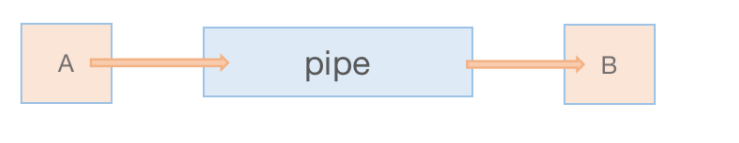
套接字文件
Socket本身有“插座”的意思，在Unix/Linux环境下，用于表示进程间网络通信的特殊文件类型。本质为内核借助缓冲区形成的伪文件。
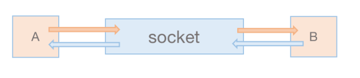
文件操作命令 显示当前工作目录 每个shell和系统进程都有一个当前的工作目录 CWD：current work directory
显示当前shell CWD的绝对路径
pwd命令: printing working directory
范例：
1 2 3 4 5 6 7 8 9 10 11 12 13 14 15 16 [root@centos8 ~] /root [root@centos8 ~] [root@centos8 data] /data [root@rocky8 ~] lrwxrwxrwx. 1 root root 7 Oct 11 2021 /bin -> usr/bin [root@rocky8 ~] [root@rocky8 bin] /bin [root@rocky8 bin] /usr/bin
绝对和相对路径 描述一个文件位置有两种方式
绝对路径
以正斜杠/ 即根目录开始
描述完整的文件的位置路径
可用于任何想指定一个文件名的时候
相对路径
不以斜线开始，而是以当前所在的位置开始
一般情况下，是指相对于当前工作目录的路径，特殊场景下，是相对于某目录的位置
可以作为一个简短的形式指定一个文件名
1 2 3 4 5 6 7 8 9 10 11 12 13 14 15 16 17 18 [root@rocky86 ~] /root [root@rocky86 ~] [root@rocky86 sysconfig] /etc/sysconfig [root@rocky86 sysconfig] [root@rocky86 network-scripts] /etc/sysconfig/network-scripts [root@rocky86 network-scripts] [root@rocky86 ~] /root
基名 & 目录名
基名：basename，只取文件名而不要路径
目录名：dirname，只取路径，不要文件名
范例：
1 2 3 4 5 6 7 8 9 10 11 [root@centos8 bin] network [root@centos8 bin] /etc/sysconfig [root@centos8 ~] /etc/sysconfig/network-scripts [root@centos8 ~] ifcfg-eth0
范例：
1 2 3 4 5 6 7 8 9 10 11 12 [root@rocky86 ~] nginx-1.18.0.tar.gz [root@rocky86 ~] nginx-1.18.0.tar.gz.tar.gz [root@rocky86 ~] nginx-1.18.0 [root@rocky86 ~] nginx-1.18.0.tar.gz
范例：
1 2 3 [root@rocky86 ~] [root@rocky86 ~] [root@rocky86 ~]
更改目录 1 2 3 4 5 6 7 8 9 10 cd [-L|[-P [-e]] [-@]] [dir ]-L -P cd .. cd - cd | cd ~ cd ~username
范例：
1 2 3 4 5 6 7 8 9 10 11 12 13 14 15 [root@centos8 ~] [root@centos8 sysconfig] /etc/sysconfig [root@centos8 sysconfig] [root@centos8 data] /data [root@centos8 data] [root@centos8 bin] /bin [root@centos8 bin] [root@centos8 bin] /usr/bin
相关环境变量
1 2 3 4 5 6 7 8 9 10 11 $PWD $OLDPWD [root@rocky86 boot] /boot /var [root@rocky86 boot] /var [root@rocky86 var] /var /boot
列出目录内容 1 2 3 4 5 6 7 8 9 10 11 12 13 14 15 ls [OPTION]... [FILE]...-a|--all -l -R|--recursive -d|--directory -1 -S -t -u -U -X -F|--classify
说明：
ls 查看不同后缀文件时的颜色由 /etc/DIR_COLORS 和@LS_COLORS变量定义
ls -l 看到文件的大小，不一定是实际文件真正占用空间的大小
ll 是 ls命令的一个别名，在centos 和 ubuntu 系统中,该别名的参数不一样
1 2 3 4 5 [root@rocky86 ~] alias ll='ls -l --color=auto' root@ubuntu20:~ alias ll='ls -alF'
范例：
1 2 3 4 [root@centos8 ~] .jpg 01;31 [root@centos8 ~] [root@centos8 ~]
查看文件状态 stat 一个文件有两部份信息：元数据和具体内容
查看文件元数据
1 2 3 4 5 6 7 stat [OPTION]... FILE...-t｜--terse -f|--file-system -c|--format
每个文件有三个时间戳属性
属性
说明
atime
access time
访问时间，即读取文件内容时间，
mtime
modify time
修改内容的时间
ctime
change time
元数据发生改变的时间
1 2 3 4 5 6 7 8 9 10 11 12 13 14 15 16 17 18 19 20 21 22 23 24 25 26 27 28 29 30 31 32 33 34 35 36 37 38 [root@rocky8 ~] File: /etc/fstab Size: 655 Blocks: 8 IO Block: 4096 regular file Device: fd00h/64768d Inode: 268568707 Links: 1 Access: (0644/-rw-r--r--) Uid: ( 0/ root) Gid: ( 0/ root) Context: system_u:object_r:etc_t:s0 Access: 2024-04-26 21:35:28.670048634 +0800 Modify: 2024-04-24 15:23:46.540624845 +0800 Change: 2024-04-24 15:27:00.584639230 +0800 Birth: 2024-04-24 15:23:46.540624845 +0800 [root@rocky8 ~] File: /boot/ Size: 4096 Blocks: 8 IO Block: 4096 directory Device: 801h/2049d Inode: 128 Links: 5 Access: (0555/dr-xr-xr-x) Uid: ( 0/ root) Gid: ( 0/ root) Context: system_u:object_r:boot_t:s0 Access: 2024-04-24 15:26:19.568636898 +0800 Modify: 2024-04-24 16:07:59.307086248 +0800 Change: 2024-04-24 16:07:59.307086248 +0800 Birth: 2024-04-24 15:23:43.025759000 +0800 [root@rocky8 ~] File: "/etc/fstab" ID: fd0000000000 Namelen: 255 Type: xfs Block size: 4096 Fundamental block size: 4096 Blocks: Total: 34062080 Free: 33422263 Available: 33422263 Inodes: Total: 68157440 Free: 68121720 [root@rocky8 ~] 644-268568707-/etc/fstab
确定文件类型 文件可以包含多种类型的数据，使用file命令检查文件的类型，然后确定适当的打开命令或应用程序使用
格式：
1 2 3 4 5 6 7 8 file [options] <filename>... -b|--brief -f|--files-from FILE -F|--separator STRING -L|--dereference
范例：
1 2 3 4 5 6 7 8 9 10 11 12 13 14 15 [root@rocky8 ~] /usr/lib/dracut/dracut-init.sh: Bourne-Again shell script, ASCII text executable [root@rocky8 ~] Bourne-Again shell script, ASCII text executable [root@rocky8 ~] /etc/ /bin /etc/issue [root@rocky8 ~] /etc/: directory /bin: symbolic link to usr/bin /etc/issue: ASCII text
范例：windows的文本格式和Linux的文本格式的区别
1 2 3 4 5 6 7 8 9 10 11 12 13 14 15 16 17 18 19 20 21 22 23 24 25 26 27 28 29 30 31 32 33 34 35 36 [root@rocky8 ~] a b c [root@rocky8 ~] a b c[root@rocky8 ~] win.txt: ASCII text, with CRLF line terminators linux.txt: ASCII text [root@rocky8 ~] 00000000 61 0a 62 0a 63 0a |a.b.c.| 00000006 [root@rocky8 ~] 00000000 61 0d 0a 62 0d 0a 63 |a..b..c| 00000007 [root@rocky8 ~] [root@rocky8 ~] dos2unix: converting file win.txt to Unix format... [root@rocky8 ~] win.txt: ASCII text [root@rocky8 ~] unix2dos: converting file win.txt to DOS format... [root@rocky8 ~] win.txt: ASCII text, with CRLF line terminators
范例：转换文件字符集编码
1 2 3 4 5 6 7 8 9 10 11 12 13 14 15 16 17 18 19 20 21 22 23 24 25 26 27 28 29 30 [root@rocky8 ~] [root@centos8 data] windows.txt: ISO-8859 text, with no line terminators [root@centos8 data] en_US.UTF-8 [root@centos8 data] ▒▒▒▒▒▒[root@centos8 data] [root@centos8 data] [root@centos8 data] 马哥教育[root@centos8 data] -rw-r--r-- 1 root root 12 Mar 23 10:13 windows1.txt [root@centos8 data] windows1.txt: UTF-8 Unicode text, with no line terminators [root@centos8 data] [root@centos8 data] windows2.txt: ISO-8859 text, with no line terminators
文件通配符模式 wildcard pattern 文件通配符可以用来匹配符合条件的多个文件，方便批量管理文件
通配符采有特定的符号，表示特定的含义，此特符号称为元 meta 字符
常见的通配符如下：
1 2 3 4 5 6 7 8 9 10 11 12 13 * ? ~ . ~+ ~- ~mage [0-9] [a-z] [A-Z] [wang] [^wang] [^a-z]
另外还有在Linux系统中预定义的字符类表示法如下：man 7 glob
1 2 3 4 5 6 7 8 9 10 11 12 [:digit:] [:lower:] [:upper:] [:alpha:] [:alnum:] [:blank:] [:space:] [:punct:] [:print :] [:cntrl:] [:graph:] [:xdigit:]
范例：
1 2 3 4 5 6 7 8 9 10 11 12 13 14 15 16 [root@rocky8 ~] [root@rocky86 ~] [root@rocky8 ~] -rw-r--r-- 1 root root 0 Jul 10 22:34 a -rw-r--r-- 1 root root 0 Jul 10 22:34 马 [root@rocky86 ~] -rw-r--r-- 1 root root 0 Jul 10 22:34 ab -rw-r--r-- 1 root root 0 Jul 10 22:34 马g -rw-r--r-- 1 root root 0 Jul 10 22:34 马哥
范例：
1 2 3 4 5 6 [root@rocky86 ~] /data [root@rocky86 ~] -rw-r--r-- 1 root root 6 Mar 23 09:48 /data/linux.txt
范例: [ ] 和 { }
1 2 3 4 5 6 7 8 9 10 11 12 13 14 15 16 17 18 19 20 21 22 23 24 25 26 27 28 29 30 31 [root@rocky86 ~] ls : cannot access 'f1' : No such file or directoryls : cannot access 'f2' : No such file or directory-rw-r--r-- 1 root root 0 Nov 7 09:34 f3 -rw-r--r-- 1 root root 0 Nov 7 09:34 f4 -rw-r--r-- 1 root root 0 Nov 7 09:34 f5 [root@rocky86 ~] -rw-r--r-- 1 root root 0 Nov 7 09:34 f3 -rw-r--r-- 1 root root 0 Nov 7 09:34 f4 -rw-r--r-- 1 root root 0 Nov 7 09:34 f5 [root@rocky86 ~] -rw-r--r-- 1 root root 0 Nov 7 09:46 fa -rw-r--r-- 1 root root 0 Nov 7 09:46 fA -rw-r--r-- 1 root root 0 Nov 7 09:46 fb -rw-r--r-- 1 root root 0 Nov 7 09:46 fB -rw-r--r-- 1 root root 0 Nov 7 09:46 fc [root@rocky86 ~] -rw-r--r-- 1 root root 0 Nov 7 09:46 fa -rw-r--r-- 1 root root 0 Nov 7 09:46 fb -rw-r--r-- 1 root root 0 Nov 7 09:46 fc [root@rocky86 ~] test-a.txt test-A.txt test-b.txt test-B.txt test-c.txt test-C.txt test-d.txt
范例：
1 2 3 4 5 6 7 8 9 10 11 12 13 14 15 16 17 18 19 20 21 22 23 24 25 26 27 28 29 30 31 32 33 34 35 36 37 38 [root@rocky86 ~] [root@rocky86 ~] -rw-r--r-- 1 root root 0 Mar 23 10:46 file0.txt -rw-r--r-- 1 root root 0 Mar 23 10:46 file1.txt -rw-r--r-- 1 root root 0 Mar 23 10:46 file2.txt -rw-r--r-- 1 root root 0 Mar 23 10:46 file3.txt -rw-r--r-- 1 root root 0 Mar 23 10:46 file4.txt -rw-r--r-- 1 root root 0 Mar 23 10:46 file5.txt -rw-r--r-- 1 root root 0 Mar 23 10:46 file6.txt -rw-r--r-- 1 root root 0 Mar 23 10:46 file7.txt -rw-r--r-- 1 root root 0 Mar 23 10:46 file8.txt -rw-r--r-- 1 root root 0 Mar 23 10:46 file9.txt [root@rocky86 ~] -rw-r--r-- 1 root root 0 Mar 23 10:46 file0.txt -rw-r--r-- 1 root root 0 Mar 23 10:46 file1.txt -rw-r--r-- 1 root root 0 Mar 23 10:46 file2.txt -rw-r--r-- 1 root root 0 Mar 23 10:46 file3.txt -rw-r--r-- 1 root root 0 Mar 23 10:46 file4.txt -rw-r--r-- 1 root root 0 Mar 23 10:46 file5.txt -rw-r--r-- 1 root root 0 Mar 23 10:46 file6.txt -rw-r--r-- 1 root root 0 Mar 23 10:46 file7.txt -rw-r--r-- 1 root root 0 Mar 23 10:46 file8.txt -rw-r--r-- 1 root root 0 Mar 23 10:46 file9.txt [root@rocky86 ~] filea.txt fileA.txt fileb.txt fileB.txt filec.txt [root@rocky86 ~] fileC.txt filed.txt fileD.txt filee.txt fileE.txt [root@rocky86 ~] filea.txt fileg.txt filen.txt filew.txt [root@rocky86 ~]
范例：
1 2 3 4 5 6 7 8 9 10 11 [root@rocky86 ~] filee.txt filel.txt fileo.txt filer.txt filew.txt [root@rocky86 ~] filea.txt filed.txt fileg.txt filej.txt filem.txt filep.txt files.txt filev.txt filey.txt fileb.txt filee.txt fileh.txt filek.txt filen.txt fileq.txt filet.txt filew.txt filez.txt filec.txt filef.txt filei.txt filel.txt fileo.txt filer.txt fileu.txt filex.txt
范例：比较有无*的功能区别
1 2 3 4 5 ls * ls -a * ls -a ls .* ls -d .*
范例：
1 2 [root@rocky86 ~] [root@rocky86 ~]
范例：
1 2 3 4 5 6 7 8 9 [root@rocky86 ~] [root@rocky86 ~] [root@rocky86 ~] file1.log 'file*.log' [root@rocky86 ~] 'file*.log'
创建空文件和刷新时间 touch命令可以用来创建空文件或刷新文件的时间
格式：
1 2 3 4 5 6 7 8 9 10 11 12 touch [OPTION]... FILE...-a -m -h|--no-dereference -r|--reference -d|--date -t [[CC]YY]MMDDhhmm[.ss] --time=STRING -c|--no-create
范例：
1 2 3 4 5 6 7 8 9 10 11 12 13 14 15 16 17 18 19 20 21 22 23 24 25 26 27 28 29 30 31 32 33 34 35 36 37 38 39 40 41 42 43 44 45 46 47 48 49 50 51 52 53 54 55 56 57 58 59 60 61 62 63 64 65 66 67 68 69 70 [root@rocky8 ~] [root@rocky8 ~] -rw-r--r--. 1 root root 0 Apr 28 16:09 f1.txt [root@rocky8 ~] -rw-r--r--. 1 root root 23 Oct 9 2021 /etc/issue [root@rocky8 ~] [root@rocky8 ~] -rw-r--r--. 1 root root 23 Apr 28 16:09 /etc/issue [root@rocky8 ~] File: /etc/issue Size: 23 Blocks: 8 IO Block: 4096 regular file Device: fd00h/64768d Inode: 268597004 Links: 1 Access: (0644/-rw-r--r--) Uid: ( 0/ root) Gid: ( 0/ root) Context: system_u:object_r:etc_t:s0 Access: 2024-04-28 16:09:42.549239569 +0800 Modify: 2024-04-28 16:09:42.549239569 +0800 Change: 2024-04-28 16:09:42.549239569 +0800 Birth: 2024-04-24 15:23:58.278625794 +0800 [root@rocky8 ~] Sun Apr 28 16:10:13 CST 2024 [root@rocky8 ~] [root@rocky8 ~] 2024-04-27_16:10:55.log anaconda-ks.cfg f1.txt [root@rocky8 ~] [root@rocky8 ~] 2024-04-27_16:10:55.log 2025-04-28_16:16:02.log anaconda-ks.cfg f1.txt [root@rocky8 ~] [root@rocky8 ~] File: abc Size: 0 Blocks: 0 IO Block: 4096 regular empty file Device: fd00h/64768d Inode: 402660596 Links: 1 Access: (0644/-rw-r--r--) Uid: ( 0/ root) Gid: ( 0/ root) Context: unconfined_u:object_r:admin_home_t:s0 Access: 2022-05-05 05:05:05.000000000 +0800 Modify: 2022-05-05 05:05:05.000000000 +0800 Change: 2024-04-28 16:18:32.601257694 +0800 Birth: 2024-04-28 16:18:32.601257694 +0800 [root@rocky8 ~] [root@rocky8 ~] [root@rocky8 ~] File: abc Size: 0 Blocks: 0 IO Block: 4096 regular empty file Device: fd00h/64768d Inode: 402660596 Links: 1 Access: (0644/-rw-r--r--) Uid: ( 0/ root) Gid: ( 0/ root) Context: unconfined_u:object_r:admin_home_t:s0 Access: 2024-07-08 09:10:00.000000000 +0800 Modify: 2024-07-08 09:10:00.000000000 +0800 Change: 2024-04-28 16:20:46.552262274 +0800 Birth: 2024-04-28 16:18:32.601257694 +0800
复制文件和目录 利用 cp（copy）命令可以实现文件或目录的复制
格式：
1 2 3 4 5 6 7 8 9 10 11 12 13 14 15 16 17 18 19 20 21 22 23 24 25 26 cp [OPTION]... [-T] SOURCE DESTcp [OPTION]... SOURCE... DIRECTORYcp [OPTION]... -t DIRECTORY SOURCE...-i|--interactive -n|--no-clobber -R|-r|--recursive -a|--archive -s|--symbolic-link -p --preserve[=ATTR_LIST] -u|--update -v|--verbose -b --backup=numbered mode ownership timestamp links xattr context all
源/目标
不存在
存在且为文件
存在且目录
一个文件
新建DEST，并将SRC中
将SRC中的内容覆盖至 DEST中
在DEST下新建与原文件同名 的文件，
多个文件
提示错误
提示错误
在DEST下新建与原文件同名 的文件，
目录须使
创建指定DEST同名目 录，
提示错误
在DEST下新建与原目录同名 的目录，
范例：
1 2 3 4 5 6 7 8 9 10 11 12 13 14 15 16 17 18 19 20 21 22 23 24 25 26 27 28 29 30 31 32 33 34 35 36 [root@rocky86 ~] -rw-r--r--. 1 root root 86 Dec 13 16:21 /data/issue_wang.bak -rw-r--r--. 1 wang wang 86 Dec 13 16:18 /home/wang/issue [root@rocky86 ~] [root@rocky86 ~] -rw-r--r--. 1 wang wang 86 Dec 13 16:18 /data/issue_wang2.bak -rw-r--r--. 1 wang wang 86 Dec 13 16:18 /home/wang/issue [root@rocky86 ~] cp : -r not specified; omitting directory '/etc/sysconfig/' [root@rocky86 ~] [root@rocky86 ~] total 12 -rw-r--r--. 1 root root 0 Dec 13 16:11 2019-12-12_16:11:48.log -rw-r--r--. 1 root root 0 Dec 13 16:13 2020-12-13_16:13:11.log -rw-r--r--. 1 wang wang 86 Dec 13 16:18 issue_wang2.bak -rw-r--r--. 1 root root 86 Dec 13 16:21 issue_wang.bak drwxr-xr-x. 7 root root 4096 Dec 13 16:23 sysconfig [root@rocky86 ~] [root@rocky86 ~] total 16 -rw-r--r--. 1 root root 0 Dec 13 16:11 2019-12-12_16:11:48.log -rw-r--r--. 1 root root 0 Dec 13 16:13 2020-12-13_16:13:11.log -rw-r--r--. 1 wang wang 86 Dec 13 16:18 issue_wang2.bak -rw-r--r--. 1 root root 86 Dec 13 16:21 issue_wang.bak drwxr-xr-x. 7 root root 4096 Dec 13 16:23 sysconfig drwxr-xr-x. 7 root root 4096 Dec 13 16:24 sysconfig_bak
范例：复制时如果覆盖先备份再覆盖
1 2 3 4 5 6 7 8 9 10 11 12 13 14 15 16 17 18 19 20 21 22 23 24 25 26 [root@rocky86 ~] cp : overwrite '/data/issue' ? y[16:33:09 root@centos8 ~] total 8 -rw-r--r--. 1 root root 1 Dec 13 16:33 issue -rw-r--r--. 1 root root 2610 Dec 13 16:32 issue~ [16:33:56 root@centos8 ~] cp : overwrite '/data/issue' ? y[16:34:32 root@centos8 ~] cp : overwrite '/data/issue' ? y[16:34:41 root@centos8 ~] cp : overwrite '/data/issue' ? y[16:34:48 root@centos8 ~] total 20 -rw-r--r--. 1 root root 420 Dec 13 16:34 issue -rw-r--r--. 1 root root 1 Dec 13 16:33 issue~ -rw-r--r--. 1 root root 709 Dec 13 16:33 issue.~1~ -rw-r--r--. 1 root root 709 Dec 13 16:34 issue.~2~ ----------. 1 root root 1349 Dec 13 16:34 issue.~3~
范例：特殊文件复制
移动和重命名文件 mv 命令可以实现文件或目录的移动和改名
同一分区移动数据，速度很快：数据位置没有变化
不同分区移动数据，速度相对慢：数据位置发生了变化
格式：
1 2 3 4 5 6 7 8 9 10 mv [OPTION]... [-T] SOURCE DESTmv [OPTION]... SOURCE... DIRECTORYmv [OPTION]... -t DIRECTORY SOURCE...-b -n|--no-clobber -i|--interactive -u|--update -v|--verbose
示例：
1 2 3 4 5 6 7 8 9 10 11 [root@rocky86 ~] [root@rocky86 ~] [root@rocky86 ~] [root@rocky86 ~]
利用 rename 可以批量修改文件名
格式：
1 2 3 4 5 6 7 rename [options] <expression> <replacement> <file>... -v|--verbose -s|--symlink -n|--no-act -o|--no-overwrite
范例：
1 2 3 4 5 6 7 8 9 10 11 [root@rocky86 ~] [root@rocky86 ~] [root@rocky86 ~] [root@rocky86 ~]
删除文件 使用 rm 命令可以删除文件和目录
注意：此命令非常危险，慎重使用，建议使用 mv 代替 rm
格式：
1 2 3 4 5 6 7 8 rm [OPTION]... [FILE]...-i -f|--force -r|-R|--recursive -d|--dir --no-preserve-root
范例：
1 2 3 4 5 6 7 8 9 10 11 12 [root@rocky86 ~] rm : it is dangerous to operate recursively on '/' rm : use --no-preserve-root to override this failsafe[root@rocky86 ~] [root@rocky86 ~] [root@rocky86 ~]
范例：删除特殊文件
1 2 3 4 5 6 7 8 9 10 11 12 13 14 15 16 17 18 19 20 21 22 23 24 25 26 27 28 29 30 31 32 33 34 35 [root@rocky86 0711] -f [root@rocky86 0711] [root@rocky86 0711] -f [root@rocky86 0711] [root@rocky86 0711] -f [root@rocky86 0711] [root@rocky86 0711] -f [root@rocky86 0711] [root@rocky86 0711] [root@rocky86 0711] [root@rocky86 0711] [root@rocky86 ~] [root@rocky86 ~] '~' [root@rocky86 ~] rm : cannot remove '/root' : Is a directory[root@rocky86 ~] rm : cannot remove '/root' : Is a directory[root@rocky86 ~]
范例：避免误删除，定义别名
目录操作 显示目录树 tree 1 2 3 4 5 6 7 8 9 10 11 12 13 14 15 16 17 18 19 tree [-acdfghilnpqrstuvxACDFJQNSUX] [-H baseHREF] [-T title ] -a -d -f -F -g -u -p -s -i -n -t -r -o filename -L n -D -C
范例：
1 2 3 4 5 6 7 [root@rocky86 ~] [root@rocky86 ~] [root@rocky86 ~]
创建目录 mkdir 1 2 3 4 5 6 mkdir [OPTION]... DIRECTORY...-m|--mode -p|--parents -v|--verbose
范例：
1 2 3 4 5 6 7 8 9 10 11 12 13 14 15 16 17 [root@rocky86 ~] [root@rocky86 ~] [root@rocky86 ~] mkdir : created directory 'dirx' mkdir : created directory 'dirx/diry' mkdir : created directory 'dirx/diry/dirz' [root@rocky86 ~] dirx └── diry └── dirz 2 directories, 0 files
删除空目录 rmdir rmdir只能删除空目录，如果想删除非空目录，可以使用rm -r 命令，递归删除目录树
1 2 3 4 5 6 rmdir [OPTION]... DIRECTORY...--ignore-fail-on-non-empty -p|--parents -v|--verbose
范例：从外层开始创建，从里层开始删除
1 2 3 4 5 6 7 8 9 10 11 [root@rocky86 ~] mkdir : created directory 'a' mkdir : created directory 'a/b' mkdir : created directory 'a/b/c' mkdir : created directory 'a/b/c/d' [root@rocky86 ~] rmdir : removing directory, 'a/b/c/d' rmdir : removing directory, 'a/b/c' rmdir : removing directory, 'a/b' rmdir : removing directory, 'a'
练习
如何创建/testdir/dir1/x, /testdir/dir1/y, /testdir/dir1/x/a, /testdir/dir1/x/b, /testdir/dir1/y/a, /testdir/dir1/y/b
如何创建/testdir/dir2/x, /testdir/dir2/y, /testdir/dir2/x/a, /testdir/dir2/x/b
如何创建/testdir/dir3, /testdir/dir4, /testdir/dir5, /testdir/dir5/dir6, /testdir/dir5/dir7
1 2 3 4 5 6 7 8 9 10 11 12 13 14 15 16 17 18 19 20 21 22 23 24 25 26 1. [root@rocky8 ~] mkdir : created directory '/testdir' mkdir : created directory '/testdir/dir1' mkdir : created directory '/testdir/dir1/x' mkdir : created directory '/testdir/dir1/x/a' mkdir : created directory '/testdir/dir1/x/b' mkdir : created directory '/testdir/dir1/y' mkdir : created directory '/testdir/dir1/y/a' mkdir : created directory '/testdir/dir1/y/b' 2. [root@rocky8 ~] mkdir : created directory '/testdir/dir2' mkdir : created directory '/testdir/dir2/x' mkdir : created directory '/testdir/dir2/x/a' mkdir : created directory '/testdir/dir2/x/b' mkdir : created directory '/testdir/dir2/y' 3. [root@rocky8 ~] mkdir : created directory '/testdir/dir3' mkdir : created directory '/testdir/dir4' mkdir : created directory '/testdir/dir5' mkdir : created directory '/testdir/dir5/dir6' mkdir : created directory '/testdir/dir5/dir7'
文件元数据和节点表结构 inode 表结构 在Linux系统中，一切皆文件，
每个文件，又分为文件元数据和具体内容两部份，
一个文件元数据和其具体内容数据，在磁盘分区上，是分开存放的。
这种存储文件元数据的区域就叫 inode，中文译作 “索引节点”，
每个文件都有一个 inode 和 n(n>=1) 个 block 数据块，inode 存储文件元数据，数据块存储文件具体内容数据，
磁盘在格式化时，系统会自动将磁盘分为两个区域，
一个是 inode 区（inode table），用来存放文件的 inode，
另一个是数据区，分成很多个block(块)，用来存放文件的具体内容数据，
一个磁盘分区上有多少个inode和多少个block，由系统自行决定，跟文件系统，磁盘分区大小，数据块大小有关，
一个磁盘分区，能存放多少个文件，由文件大小，磁盘分区大小，inode数量决定，
inode 编号可重复使用，当删除一个文件之后，其inode 编号会被回收，供下次新文件使用，
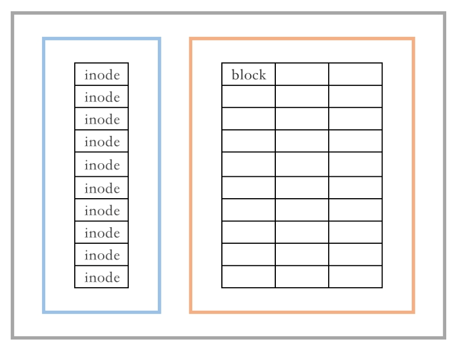
每一个inode表记录对应的保存了以下信息：
inode number（索引节点编号）
文件类型
权限
属主属组
链接数
文件大小
各时间戳
指向具体数据块的指针
有关文件的其他数据
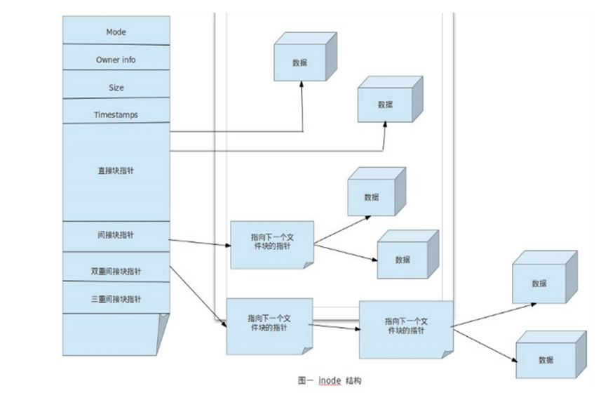
以指针大小为4字节，block块大小为4KB为前置条件
指针大小和block 块大小跟操作系统平台，以及文件系统有关；
直接指针
12个直接指针，直接指向具体数据块，如果block 大小为 4096(4K)，则直接指针可以保存 48KB的文件
间接指针
1个间接指针，指向一个数据块，只不过该block上保存的是指针，而不是具体数据
如果block 大小为 4096(4K)，一个指针占用4字节，所以此处可以存储 4096/4=1024个 block 地址；
则可以存储的数据大小为 1024*4096=4MB
双重间接指针
1个双重间接指针，指向一个数据块，只不过该block上保存的是指针，而不是具体数据
如果block 大小为 4096(4K)，一个指针占用4字节，所以此处可以存储 4096/4=1024个 block 地址；
同理，其指向的 1024个block上，也都是存储的指针地址；
则此处可以存储的数据大小为 1024x1024x4096=4GB
三重间接指针
1个三重间接指针，指向一个数据块，只不过该block上保存的是指针，而不是具体数据
如果block 大小为 4096(4K)，一个指针占用4字节，所以此处可以存储 4096/4=1024个 block 地址；
同理，其指向的 1024个block上，也都是存储的指针地址 则此处可以存储的数据大小为 1024x1024x1024x4096=4TB
单文件最大容量
12x直接指针 + 间接指针 + 双重间接指针 + 三重间接指针
目录
目录是个特殊文件，目录文件的内容保存了此目录中文件的列表及inode number对应关系
文件引用一个是 inode号
人是通过文件名来引用一个文件
一个目录是目录下的文件名和文件inode号之间的映射
inode表和目录
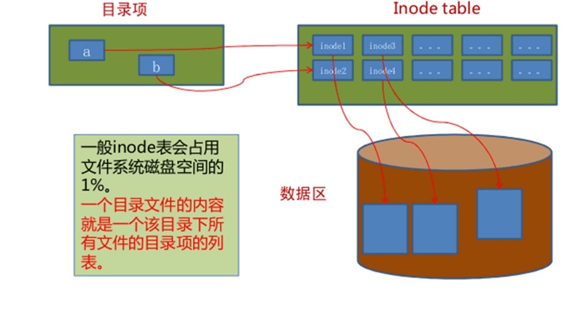
cp和inode
cp 命令：
分配一个空闲的inode号，在inode表中生成新条目
在目录中创建一个目录项，将名称与inode编号关联
拷贝数据生成新的文件
rm和inode
rm 命令：
链接数递减，从而释放的inode号可以被重用
把数据块放在空闲列表中
删除目录项
数据实际上不会马上被删除，但当另一个文件使用数据块时将被覆盖
mv和inode
如果mv命令的目标和源在相同的文件系统，作为mv 命令 用新的文件名创建对应新的目录项 删除旧目录条目对应的旧的文件名 不影响inode表（除时间戳）或磁盘上的数据位置：没有数据被移动！
如果目标和源在一个不同的文件系统， mv相当于cp和rm
范例：查看文件系统类型
1 2 3 4 5 6 7 8 9 10 11 12 13 14 15 16 [root@rocky8 ~] Filesystem Type Size Used Avail Use% Mounted on devtmpfs devtmpfs 877M 0 877M 0% /dev tmpfs tmpfs 896M 0 896M 0% /dev/shm tmpfs tmpfs 896M 8.7M 887M 1% /run tmpfs tmpfs 896M 0 896M 0% /sys/fs/cgroup /dev/mapper/rl-root xfs 130G 2.9G 128G 3% / /dev/mapper/rl-home xfs 65G 497M 65G 1% /home /dev/sda1 xfs 1014M 212M 803M 21% /boot tmpfs tmpfs 180M 0 180M 0% /run/user/0 [root@rocky8 ~] /dev/mapper/rl-root / xfs defaults 0 0 UUID=a8e3c539-a7e7-4828-9a4d-08a9ec290d07 /boot xfs defaults 0 0 /dev/mapper/rl-home /home xfs defaults 0 0 /dev/mapper/rl-swap none swap defaults 0 0
范例：查看分区inode
1 2 3 4 5 6 7 8 9 10 11 12 13 14 15 16 17 18 [root@rocky8 ~] Filesystem Inodes IUsed IFree IUse% Mounted on devtmpfs 224364 394 223970 1% /dev tmpfs 229154 1 229153 1% /dev/shm tmpfs 229154 594 228560 1% /run tmpfs 229154 17 229137 1% /sys/fs/cgroup /dev/mapper/rl-root 68157440 52706 68104734 1% / /dev/mapper/rl-home 34078720 3 34078717 1% /home /dev/sda1 524288 310 523978 1% /boot tmpfs 229154 5 229149 1% /run/user/0 [root@rocky8 ~] Filesystem Inodes IUsed IFree IUse% Mounted on /dev/sda1 524288 310 523978 1% /boot [root@rocky8 ~] Filesystem Inodes IUsed IFree IUse% Mounted on /dev/sda1 524288 310 523978 1% /boot
范例：查看文件inode
1 2 3 4 5 6 7 8 9 10 11 12 13 14 15 16 17 18 19 [root@rocky8 ~] 403579895 -rw-r--r--. 1 root root 0 Aug 26 15:35 abc [root@rocky8 ~] 403579895 abc [root@rocky8 ~] File: abc Size: 0 Blocks: 0 IO Block: 4096 regular empty file Device: fd00h/64768d Inode: 403579895 Links: 1 Access: (0644/-rw-r--r--) Uid: ( 0/ root) Gid: ( 0/ root) Context: unconfined_u:object_r:admin_home_t:s0 Access: 2024-08-26 15:35:19.342504991 +0800 Modify: 2024-08-26 15:35:19.342504991 +0800 Change: 2024-08-26 15:35:19.342504991 +0800 Birth: 2024-08-26 15:35:19.342504991 +0800 [root@rocky8 ~] 403579895
inode编号耗尽 & 磁盘打满
1 2 3 4 5 6 7 8 9 10 11 echo test -{1..523977}.txt | xargs touch cp /dev/zero /tmp/ df -i df -lh
磁盘分区还有空间，但提示没有足够空间创建文件，这就是因为 inode 编号耗尽的原因
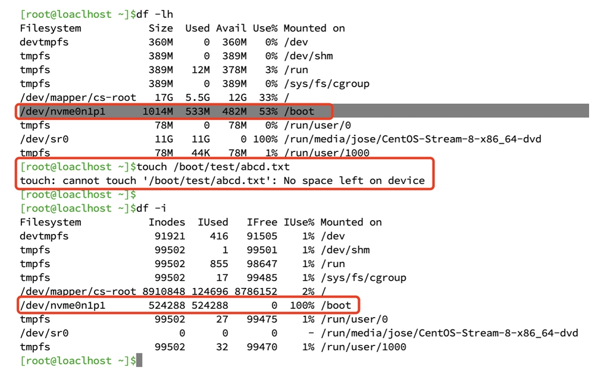
inode 编号资源还有，但磁盘数据空间被耗尽，同样无法创建文件
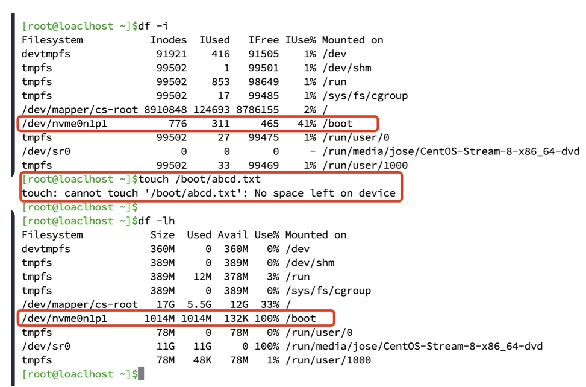
范例：删除大文件
硬(hard)链接 hard link
硬链接的作用是允许一个文件拥有多个有效的路径名，
新增一个文件，指向某个文件的inode，这样，这两个文件就互为硬链接，
也就是多个文件名，都是指向同一个inode，这是硬链接的本质。
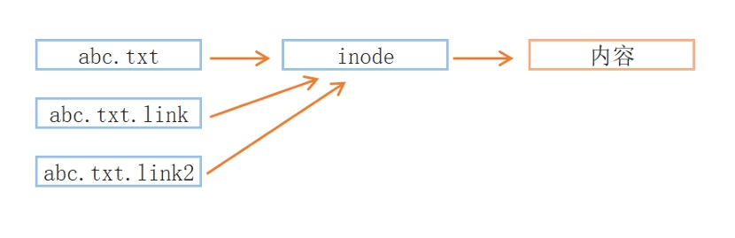
硬链接特性
创建硬链接会在对应的目录中增加额外的记录项以引用文件
对应于同一文件系统上一个物理文件
每个目录引用相同的inode号
创建时链接数递增
删除文件时：rm命令递减计数的链接，文件要存在，至少有一个链接数，当链接数为零时，该文件被删除
不能跨越驱动器或分区
不支持对目录创建硬链接
格式:
范例：
1 2 3 4 5 6 7 8 9 10 11 12 13 14 15 16 17 18 19 [root@rocky8 dir1] total 0 '被引用次数' 768482 drwxr-xr-x. 2 root root 6 Aug 26 15:56 . 402653313 dr-xr-x---. 3 root root 168 Aug 26 15:56 .. [root@rocky8 dir1] [root@rocky8 dir1] total 0 -rw-r--r--. 1 root root 0 Aug 26 16:02 a [root@rocky8 dir1] [root@rocky8 dir1] total 0 -rw-r--r--. 2 root root 0 Aug 26 16:02 a -rw-r--r--. 2 root root 0 Aug 26 16:02 b
符号 symbolic (或软 soft)链接 symbolic link，也称为符号链接，类似于windows 中的快捷方式，
软链接是建立一个独立的文件，这个文件的指向的是目标的文件名。
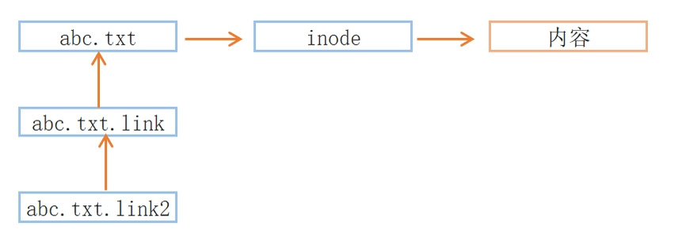
软链接特点
一个符号链接的内容是它引用文件的名称
可以对目录创建软链接
可以跨分区的文件实现
指向的是另一个文件的路径；其大小为指向的路径字符串的长度；不增加或减少目标文件inode的引用计数
软链接如果使用相对路径，是相对于原文件的路径，而非相对于当前目录
删除软链接本身，不会删除源目录内容
删除源目录的文件，不会删除链接文件
格式：
范例: 查看软链接
1 2 3 4 5 6 7 8 9 10 11 [root@rocky8 ~] lrwxrwxrwx. 1 root root 4 Oct 9 2021 /bin/sh -> bash [root@rocky8 ~] lrwxrwxrwx. 1 root root 7 Oct 11 2021 /bin -> usr/bin [root@rocky8 ~] bash [root@rocky8 ~] usr/bin
范例：
1 2 3 4 5 6 7 8 9 10 11 12 13 14 15 16 17 18 19 20 21 22 [root@rocky86 /] '/boot/abc.link' -> 'abc' [root@rocky86 /] lrwxrwxrwx 1 root root 3 Jul 12 15:08 /boot/abc.link -> abc [root@rocky86 /] '/boot/abc.link2' -> '/root/abc' [root@rocky86 /] lrwxrwxrwx 1 root root 9 Jul 12 15:10 /boot/abc.link2 -> /root/abc [root@rocky86 /] '/boot/abc.link3' -> '../root/abc' [root@rocky86 /] lrwxrwxrwx 1 root root 11 Jul 12 15:12 /boot/abc.link3 -> ../root/abc
范例：删除软链接
1 2 3 4 5 6 7 8 9 10 [root@rocky86 0712] total 0 drwxr-xr-x 2 root root 48 Jul 12 15:17 dir1 lrwxrwxrwx 1 root root 5 Jul 12 15:18 dir1.link -> dir1/ [root@rocky86 0712] [root@rocky86 0712]
硬链接和软链接区别总结
硬链接
软连接
本质
本质是同一个文件
本质不是同一个文件
跨设备
不支持
支持
inode
相同
不同
链接数
创建新的硬链接，链接数会增加，
创建或删除，链接数不会变化
文件夹
不支持
支持
相对路径
原始文件相对路径是相对于当前工作目录
原始文件相对路径是相对于链接文件的相对路径
删除源文件
是链接数减一，但链接文件的访问不受影响
链接文件将无法访问
文件类型
和源文件相同
链接文件，和源文件无关
IO 重定向和管道 标准输入和输出 Linux系统中有三个最基本的IO设备
标准输入设备(stdin)：对应终端键盘
标准输出设备(stdout)：对应终端的显示器
标准错误输出设备(stderr)：对应终端的显示器
在Linux系统中，一切皆文件，所以，这三个设备也是以文件的形式存在于系统中；
程序从标准输入文件中获取数据，再将运行结果和错误信息输出到标准输出设备和标准错误输出设备；
在虚拟终端中，标准输入输出设备都是当前的终端窗口
1 2 3 4 5 6 7 8 9 10 11 12 13 [root@rocky86 ~] lrwxrwxrwx 1 root root 15 Jul 12 10:13 /dev/stderr -> /proc/self/fd/2 lrwxrwxrwx 1 root root 15 Jul 12 10:13 /dev/stdin -> /proc/self/fd/0 lrwxrwxrwx 1 root root 15 Jul 12 10:13 /dev/stdout -> /proc/self/fd/1 [root@rocky86 ~] total 0 lrwx------ 1 root root 64 Jul 12 17:47 0 -> /dev/pts/1 lrwx------ 1 root root 64 Jul 12 17:47 1 -> /dev/pts/1 lrwx------ 1 root root 64 Jul 12 17:47 2 -> /dev/pts/1 [root@rocky86 ~] /dev/pts/1
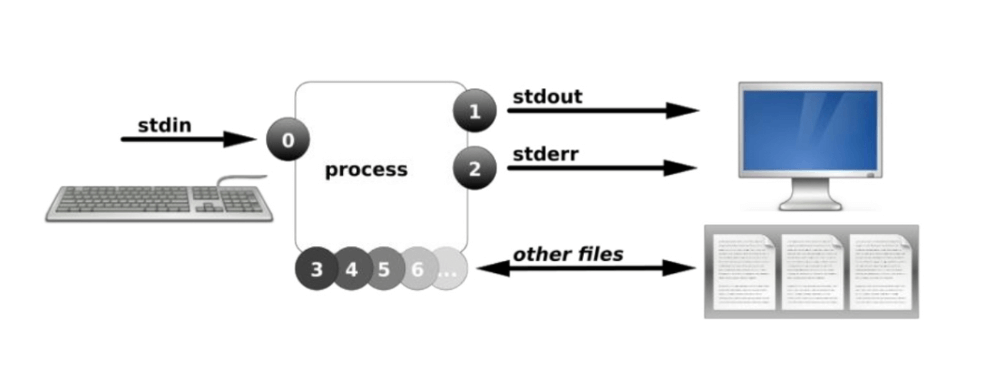
I/O重定向 redirect 重定向：redirect
I/O重定向：将默认的输入，输出或错误对应的设备改变，指向新的目标
标准输出和错误重新定向 STDOUT 和 STDERR 默认是使用当前终端，但也可以重定向到指定终端或指定文件
格式：
1 2 3 4 5 6 7 8 9 10 11 12 13 14 COMMAND OPERATOR FILE|DEVICE > 1> 2> &> >& >> 1>> 2>>
范例：标准输出至其它终端
1 2 3 4 5 6 [root@rocky86 ~] /dev/pts/0 [root@rocky86 ~] [root@rocky86 ~]
范例：标准错误输出至其它终端
1 2 3 4 5 6 [root@rocky86 ~] /dev/pts/0 [root@rocky86 ~] [root@rocky86 ~]
范例：重定向至文件
1 2 3 4 5 6 7 8 9 10 11 [root@rocky86 ~] [root@rocky86 ~] [root@rocky86 ~] [root@rocky86 ~]
标准输出和错误输出各自定向至不同位置
1 COMMAND > sucess.out 2> /path/to/error.out
范例：同时标准输出和标准错误输出
1 2 3 4 5 [root@rocky86 ~] ls : cannot access 'null' : No such file or directory fstab [root@rocky86 ~]
合并标准输出和错误输出为同一个数据流进行重定向
1 2 3 4 5 &> &>> COMMAND > /path/to/file.out 2>&1 COMMAND >> /path/to/file.out 2>&1
范例：标准输出和标准错误输出重定向至同一个文件
1 2 3 4 5 6 7 8 9 [root@rocky86 ~] [root@rocky86 ~] [root@rocky86 ~] [root@rocky86 ~]
错误写法
1 2 3 4 5 [root@rocky86 ~] [root@rocky86 ~]
范例：清除大文件
1 2 3 4 5 [root@rocky86 ~] [root@rocky86 ~]
范例: 实现标准输出和错误的互换
1 2 3 4 5 6 7 8 [root@rocky86 ~] [root@rocky86 ~] ls : cannot access 'null' : No such file or directory[root@rocky86 ~] fstab
标准输入重定向 tr 命令 用于转换字符、删除字符和压缩重复的字符。它从标准输入读取数据并将结果输出到标准输出
1 2 3 4 5 6 7 8 9 10 11 12 13 14 15 16 17 18 19 20 tr [OPTION]... SET1 [SET2]-c|-C|--complement -d|--delete -s|--squeeze-repeats -t|--truncate-set1 [:alnum:] [:alpha:] [:digit:] [:lower:] [:upper:] [:space:] [:print :] [:punct:] [:graph:] [:cntrl:] [:xdigit:]
范例：
1 2 3 4 5 6 7 8 9 10 11 12 13 14 15 16 17 18 19 20 21 22 23 [root@rocky8 ~] abcabc [root@rocky8 ~] abcccc [root@rocky8 ~] 123ABCD [root@rocky8 ~] 123ABCD [root@rocky8 ~] 123xxxxx [root@rocky8 ~] 1790 [root@rocky8 ~] love
范例：
1 2 3 4 5 6 7 8 9 10 11 12 13 14 15 16 17 18 19 20 21 22 [root@rocky86 ~] \S KERNEL \R ON AN \M [root@rocky86 ~] [root@rocky8 ~] Filesystem 1K-blocks Used Available Use% Mounted on devtmpfs 897456 0 897456 0% /dev tmpfs 916616 0 916616 0% /dev/shm tmpfs 916616 8872 907744 1% /run tmpfs 916616 0 916616 0% /sys/fs/cgroup /dev/mapper/rl-root 136248320 2968480 133279840 3% / /dev/mapper/rl-home 68124160 508020 67616140 1% /home /dev/sda1 1038336 216736 821600 21% /boot tmpfs 183320 0 183320 0% /run/user/0 [root@rocky86 ~]
标准输入重定向 标准输入重定向是使用文件来代替键盘的输入，
从文件中读取数据，代替当前终端的输入设备输入的数据，
此处要严格区分命令是否支持标准输入，标准输入和参数是两个概念；
怎么判断命令能使用标准输入重定向？
不跟任何选项参数，直接回车，看是否等待标准输入，如果是，则该命令可以使用标准输入重定向。
格式：
1 2 3 COMMAND 0< FILE COMMAND < FILE
1 2 3 4 5 6 7 8 9 10 11 12 13 14 15 16 17 18 19 20 21 22 23 24 25 26 27 28 [root@rocky86 ~] 1+2+3+4+5+6+7+8+9+10 [root@rocky86 ~] 55 [root@rocky86 ~] [root@rocky86 ~] 55 [root@rocky86 ~] [root@rocky86 ~] 55 [root@rocky86 ~] 1+2+3+4+5+6+7+8+9+10 [root@rocky86 ~] [root@rocky86 ~] 1+2+3+4+5+6+7+8+9+10 [root@rocky86 ~]
标准输入多行重定向 使用 “<<终止词” 命令从键盘把多行重导向给STDIN，直到终止词位置之前的所有文本都发送给STDIN，
有时被称为就地文本（here documents），其中终止词可以是任何一个或多个符号，
比如：!，@，$，EOF（End Of File），magedu等，其中EOF比较常用
范例：
1 2 3 4 5 6 7 8 9 10 11 12 13 [root@rocky86 ~] > 123 > 456 > EOF 123 456 [root@rocky86 ~] > 2+3 > 3^4 > EOF 5 81
范例：多行覆盖
1 2 3 4 5 6 7 8 9 10 [root@rocky86 ~] > 123 > 456 > 789 > EOF [root@rocky86 ~] 123 456 789
范例：
1 2 3 4 5 6 7 8 [root@rocky86 ~] > hi > > this is test mail > > bye > form mage > EOF
高级重定向写法 cmd <<< “string” 含义是 here-string ，表示传给给cmd的stdin的内容从这里开始是一个字符串。
范例：直接字符串
1 2 3 4 5 6 7 8 [root@rocky86 ~] abc [root@rocky86 ~] 6 [root@rocky86 ~] WELCOME TO MAGEDU
范例：执行命令作重定向输入
1 2 3 4 5 6 7 8 [root@rocky86 ~] 6 [root@rocky86 ~] 6 [root@rocky86 ~] ROCKY86
cmd1 < <(cmd2) 名称为 Process substitution ，是由两个部分组成
<(cmd2) 表示把cmd2的输出写入一个临时文件，注意：< 符号 与（ 符号之间没有空格
cmd1 < 这是一个标准的stdin重定向
把两个合起来，就是把cmd2的输出stdout传递给cmd1作为输入stdin， 中间通过临时文件做传递
范例：
1 2 3 4 5 6 7 8 [root@rocky86 ~] 6 [root@rocky86 ~] 6 [root@rocky86 ~] ROCKY86
范例：查看中间文件
1 2 [root@rocky8 ~] lr-x------. 1 root root 64 Aug 26 20:56 /dev/fd/63 -> 'pipe:[33862]'
管道 管道 管道(pipe)：名顾思义，水管，从一端进去，再从另一端出来。
在shell 中，可以将两个或多个命令(程序|进程)连接起来，将前一个命令的输出作为后一个命令的输入，就像拿水管将两个命令连起来；
使用管道，要求前一个命令必须支持标准输出，后一个命令必须支持标准输入；
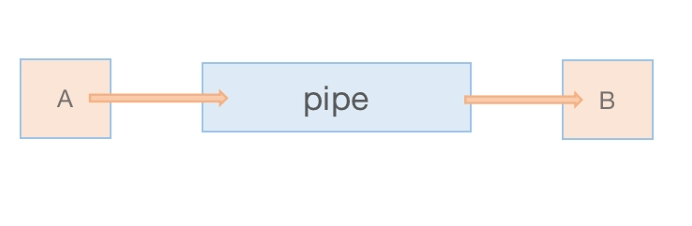
格式
1 COMMAND1|COMMAND2|COMMAND3|...
功能说明：
将命令1的STDOUT发送给命令2的STDIN，命令2的STDOUT发送到命令3的STDIN
所有命令会在当前shell进程的子shell进程中执行
组合多种工具的功能
注意：STDERR默认不能通过管道转发，可利用2>&1 或 |& 实现，格式如下
1 2 3 COMMAND1 2>&1 | COMMAND2 COMMAND1 |& COMMAND2
范例：
1 2 3 4 5 6 7 8 9 10 11 12 13 14 15 16 17 18 19 20 21 22 23 24 25 [root@rocky86 ~] 6 [root@rocky86 ~] [root@rocky8 ~] [root@rocky86 ~] /usr/local/sbin /usr/local/bin /usr/sbin /usr/bin /root/bin [root@rocky86 ~] /root/bin /usr/bin /usr/local/bin /usr/local/sbin /usr/sbin [root@rocky86 ~] 192.168.1.11
范例：标准输出和标准错误输出同时使用管道
1 2 3 4 5 6 7 [root@rocky86 ~] LS: CANNOT ACCESS 'NULL' : NO SUCH FILE OR DIRECTORY FSTAB [root@rocky86 ~] LS: CANNOT ACCESS 'NULL' : NO SUCH FILE OR DIRECTORY FSTAB
范例：实现邮件服务
1 2 3 4 5 6 7 8 9 [root@rocky86 ~] set from=3311987957@qq.com set smtp=smtp.qq.com set smtp-auth-user=3311987957@qq.com set smtp-auth-password=meenopnxjawzbfcc set smtp-auth=login set ssl-verify=ignore echo "test email" | mail -s "test" 123456@qq.com
范例：用户密码修改
1 2 3 4 5 6 7 8 9 10 11 12 13 14 15 16 17 18 19 20 21 22 [root@rocky86 ~] Changing password for user jose. magedu passwd: all authentication tokens updated successfully. [root@centos8 ~] centos [root@rocky86 ~] Changing password for user jose. passwd: all authentication tokens updated successfully. [root@rocky86 ~] Changing password for user jose. passwd: all authentication tokens updated successfully. [root@rocky86 ~] Changing password for user jose. passwd: all authentication tokens updated successfully. [root@rocky86 ~]
tee 命令 将标准输入复制到每个指定文件，并显示到标准输出
格式
1 2 3 4 5 6 7 8 9 10 tee [OPTION]... [FILE]...-a|--append -i|--ignore-interrupts -p --output-error[=模式] cmd1 | tee [-a ] filename | cmd2
范例：
1 2 3 4 5 6 7 8 9 10 11 12 13 14 15 16 17 18 [root@rocky86 ~] [root@rocky86 ~] hello [root@rocky86 ~] HELLO [root@rocky86 ~] HELLO [root@rocky86 ~] HELLO
范例：
1 2 3 4 5 6 7 8 9 10 11 12 [root@rocky86 ~] 5050 [root@rocky86 ~] 2500 [root@rocky86 ~] 5050 [root@rocky86 ~] 2500
范例：
1 2 3 4 5 6 [root@rocky86 ~] > 123 > 456 > EOF 123 456